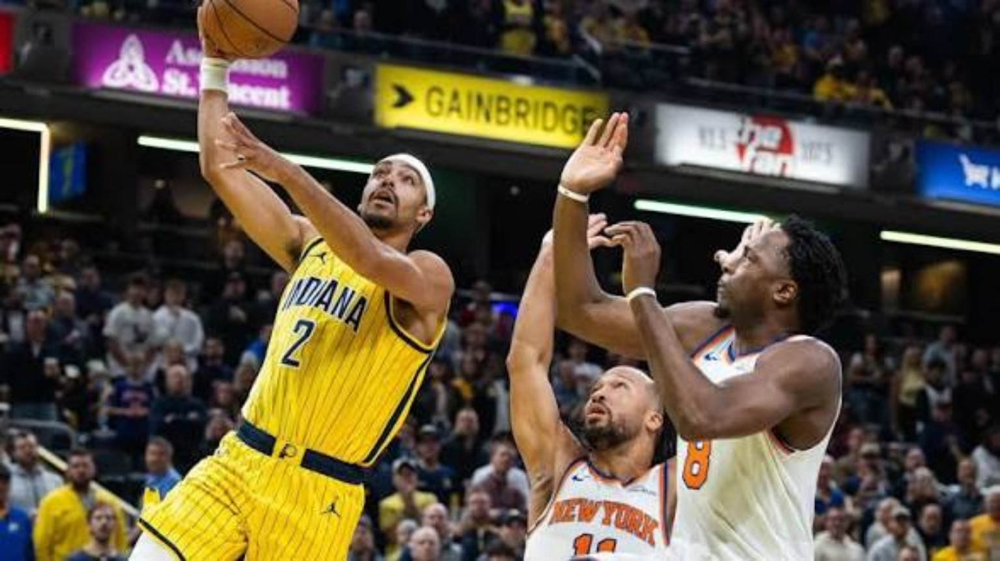
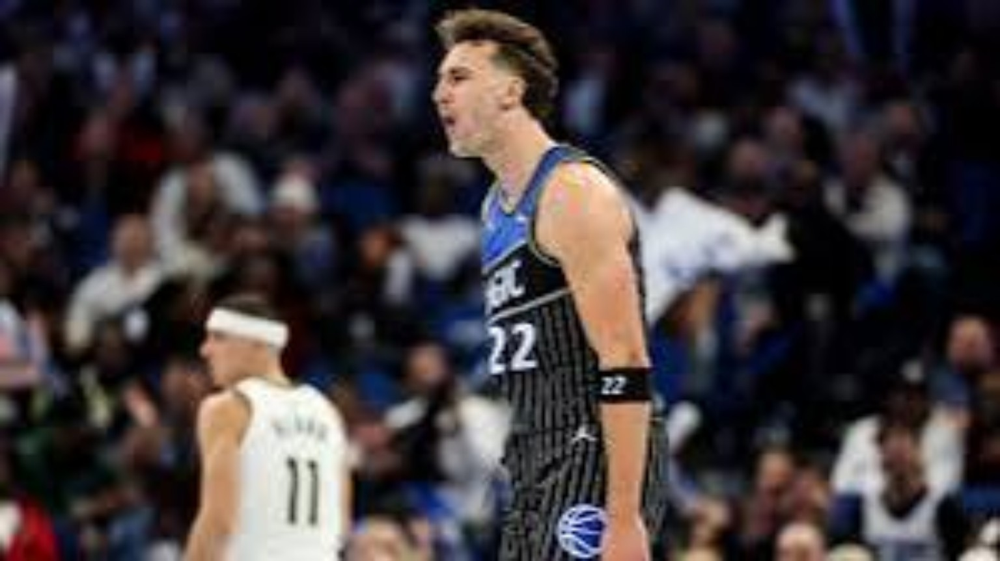
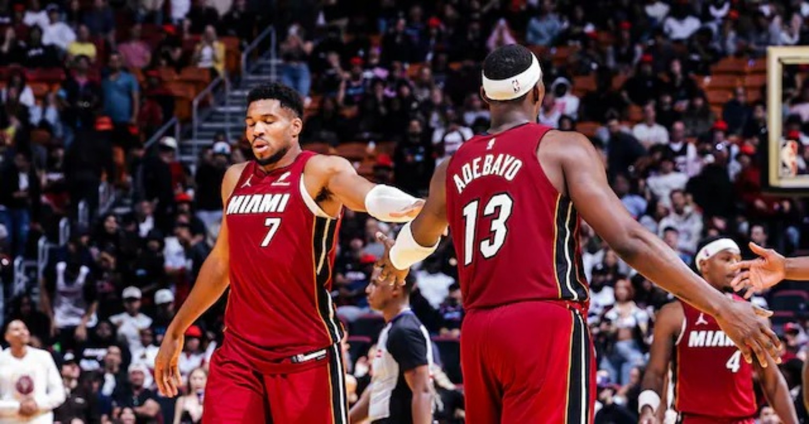
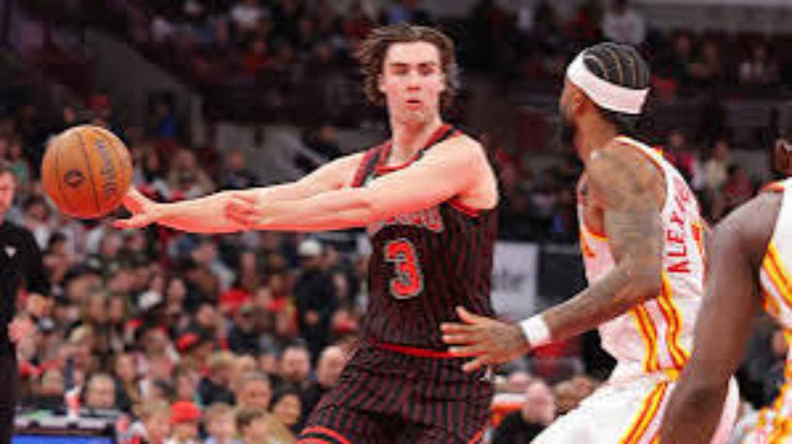
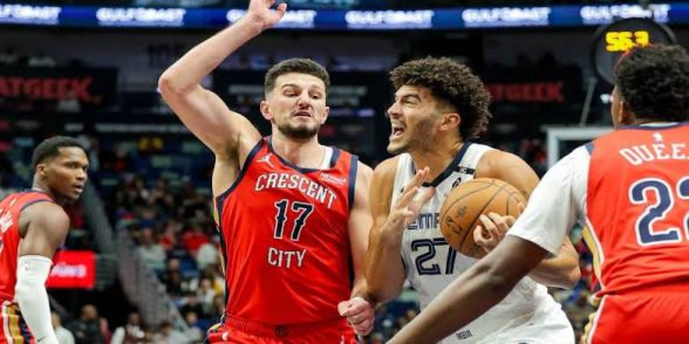
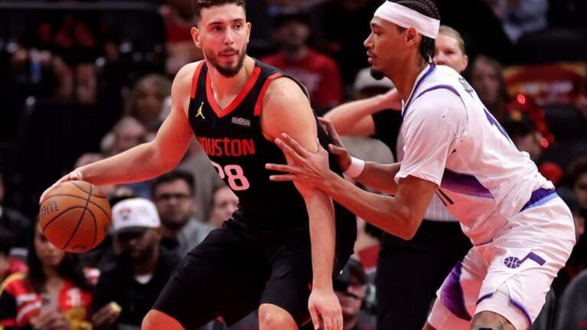
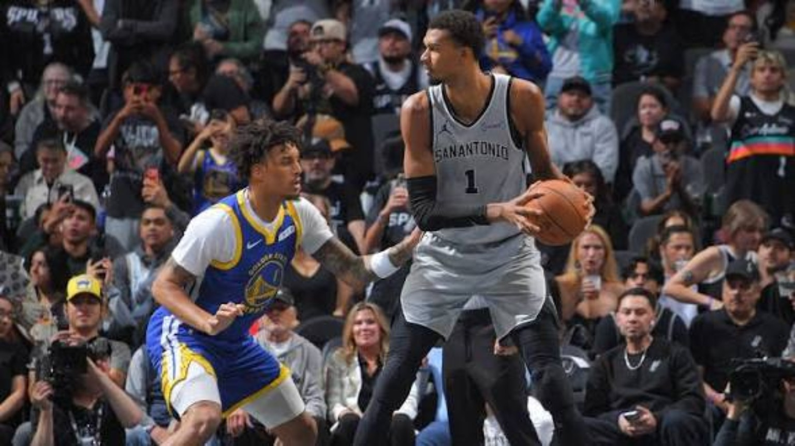
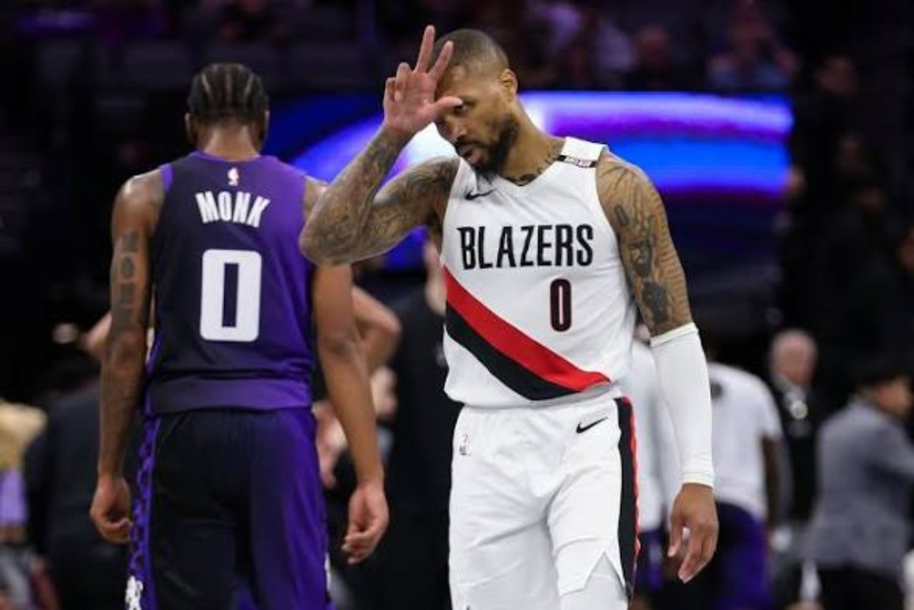
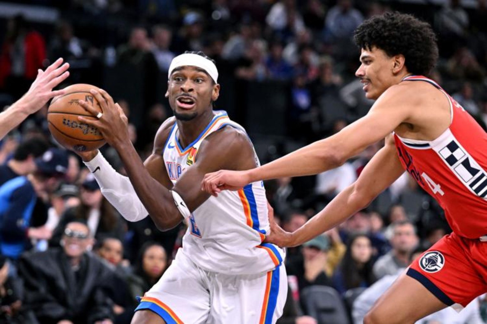

CUP NIGHT CHAOS. NINE GAMES. NO FREE PASSES.
Şengün drops 43. Miami’s frontcourt overwhelms Cleveland. San Antonio crushes Golden State. The Clippers stun Oklahoma City by one.
All nine games final · NBA Cup group play · Original 4DK collective analysis
Indiana Pacers 106, New York Knicks 104

New York Knicks: Jalen Brunson 33 PTS, 11 AST; Karl-Anthony Towns 23 PTS, 15 REB
Indiana Pacers: Pascal Siakam 19 PTS; Aaron Nesmith 18 PTS, 7 REB; Ivica Zubac 12 PTS, 13 REB
THE 4DK BREAKDOWN
Brunson delivered the type of lead-guard performance that usually wins a tight road game, and Towns controlled plenty of possessions on the defensive glass. Yet New York could not consistently finish defensive stops. Indiana grabbed 17 offensive rebounds to the Knicks’ eight, manufacturing extra possessions even when the first shot did not fall.
Here is the uncomfortable part for New York: 33 points and 11 assists from Brunson should have been enough to win this particular kind of game. He created advantages, organized the half-court possessions and kept the Knicks within one shot late. Towns added 23 and 15. But a great night from the two primary offensive engines means less when the opponent gets to restart possessions off missed shots. The Pacers were not more spectacular; they were more persistent.
Indiana's 17–8 edge on the offensive glass was not an incidental statistic. It changed the number of defensive possessions New York had to survive, wore down its interior coverage and let the Pacers manufacture offense when their first action stalled. Zubac's 13 rebounds gave Indiana a physical anchor, while Nesmith's 18 points made the Knicks pay attention away from Siakam. That is how a team with a losing record can dictate a close game against a more celebrated opponent.
For 4DK, the bigger question is whether New York can be trusted to handle the unglamorous details against playoff-caliber competition. Brunson can win the shotmaking battle and the Knicks can still lose the possession battle. Indiana, meanwhile, should not confuse one Cup win with a season turnaround, but this is a meaningful template: physicality, collective effort and just enough late execution to survive.
THE NEXT LAYER — 4DK VERDICT
Our verdict on the Knicks goes beyond asking Towns to collect more rebounds. A team must finish the possession together: guards have to locate a body, wings have to pursue the long miss, and the big cannot be left to contest and clean up alone. Indiana made New York pay for needing that second effort. We also would not call this a flawless Pacers finish. Their late mistakes reopened a game they had controlled. For Indiana, the encouraging part is the repeatable physical foundation; for New York, the warning is that star production cannot keep covering the same small breakdowns.
THE TURNING POINT
The Pacers built a nine-point halftime advantage, watched New York trim it to one after three quarters, and then survived a tense final minute. Siakam’s late basket gave Indiana an eight-point cushion before the Knicks closed to two.
WHAT IT MEANS
This was a blueprint win for Indiana: with the margin for error thin, Zubac’s physicality and Nesmith’s efficiency mattered as much as any headline scorer. New York’s perimeter production is dangerous, but its defensive rebounding must match the stakes of close Cup games.
Orlando Magic 107, Milwaukee Bucks 99

Milwaukee Bucks: Jaime Jaquez Jr. 22 PTS; Tyler Herro 18 PTS; Myles Turner 14 PTS, 11 REB
Orlando Magic: Franz Wagner 35 PTS, 9 REB, 12 AST; Desmond Bane 21 PTS, six 3PM
THE 4DK BREAKDOWN
Wagner did not merely score 35; he directed Orlando’s offense with 12 assists and kept the defense occupied on nearly every trip. His 13-for-22 shooting made the Magic difficult to load up against, while Bane’s six threes punished Milwaukee for helping.
Franz Wagner's 35 points, nine rebounds and 12 assists deserve the kind of attention normally reserved for the league's headline ballhandlers. This was not a forward simply getting hot. He controlled the tempo, read the second defender, found teammates when Milwaukee collapsed and still shot 13-for-22. That combination is what makes the point-forward label meaningful: the ball does not have to begin with a traditional point guard for the offense to have structure.
Desmond Bane's six made threes were the perfect complement. When the Bucks loaded toward Wagner's drives, Bane punished the available space. When they stayed attached to shooters, Wagner had room to attack. Orlando's 29 assists as a team reflected that give-and-take, and its 52–37 halftime advantage gave the Magic a cushion even after Milwaukee's third-quarter response.
Milwaukee did get 22 from Jaime Jaquez Jr., 18 from Tyler Herro and 14 points with 11 rebounds from Myles Turner. The Bucks' problem was not an absence of individual contributions; it was that the contributions never added up to sustained control. Their 18-for-31 free-throw shooting was particularly costly in an eight-point defeat. For Orlando, Wagner's next challenge is consistency: playing like a lead creator every night, not only when the matchup opens up.
THE NEXT LAYER — 4DK VERDICT
The next step for Orlando is to preserve that advantage when Wagner gives the ball up. A point forward becomes harder to contain when the next pass leads into another drive, a cut or a quick return pass instead of a reset. That is the standard we want to see from this group. Bane gives Franz a perimeter partner a defense must respect, but the rest of the rotation has to keep making useful decisions. Milwaukee's lesson is equally direct: wasted trips at the line shrink the value of every stop. A comeback needs routine points as much as difficult shotmaking.
THE TURNING POINT
Orlando took command early, outscoring Milwaukee 52–37 in the first half. The Bucks found more offense after halftime, but they never fully erased the cushion.
WHAT IT MEANS
The Magic can be more than a defensive-minded spoiler when Wagner combines high-volume creation with efficient shooting. Milwaukee’s 1–12 start after this loss is an unmistakable warning sign, and the Cup offers little room to recover.
Miami Heat 133, Cleveland Cavaliers 121

Cleveland Cavaliers: Donovan Mitchell 25 PTS, 7 AST; Tyrese Proctor 22 PTS; James Harden 20 PTS, 8 AST
Miami Heat: Giannis Antetokounmpo 37 PTS, 9 REB; Bam Adebayo 37 PTS, 14 REB; Davion Mitchell 22 PTS, 17 AST
THE 4DK BREAKDOWN
There is no easy defensive choice when Giannis and Bam are both finishing at this level. Giannis scored 37 on 15-for-20 shooting, Bam matched him with 37 on 13-for-19, and Davion Mitchell threaded the offense together with 17 assists. Cleveland had capable creators of its own, but Miami’s paint pressure and playmaking created a different level of stress.
This is the version of the Giannis–Bam pairing people imagined when they pictured two elite interior forces sharing a frontcourt. Giannis scored 37 on 15-for-20, Bam answered with 37 on 13-for-19, and Cleveland had no comfortable coverage. Switch and you invite power against a mismatch. Drop and you surrender space to gather speed. Send help and Miami's cutters and guards get windows behind the defense. The headline is 74 combined points; the real story is how many bad choices the pairing creates.
Davion Mitchell's 22 points and 17 assists may be the most important long-term development of the night. Miami has needed someone who can direct traffic without freezing the offense, get the ball to its stars in their preferred spots and still attack an opening himself. Seventeen assists is not just a hot scoring night by another name. It is evidence of a point guard understanding where the pressure is coming from and turning that pressure into an advantage.
The Heat scored 79 points after halftime, including 41 in the fourth, after Cleveland had taken a three-point lead into the break. That is a decisive adjustment in output, even if it does not prove one specific coaching change. Donovan Mitchell, Tyrese Proctor and James Harden gave Cleveland enough offensive creation to stay involved, but the Cavaliers could not string together the stops that mattered.
We're not handing Miami the East in November. The test is what happens when opponents take away the first paint touch and force the Heat into longer possessions. But this is the clearest evidence yet that Giannis and Bam can amplify one another rather than crowd the same space — and that Davion may be the organizing guard who makes the partnership sustainable.
THE NEXT LAYER — 4DK VERDICT
Our long-term question is how Miami organizes the space around its two big threats. One can initiate while the other screens, slips into a gap or waits for the help defender to turn his head. Those are options we want the Heat to develop consistently, rather than a claim that every basket came from the same action tonight. Davion is central to that process because timing matters as much as the pass itself. Feed the advantage before the defense resets and this frontcourt can be overwhelming. Make Giannis or Bam restart against five set defenders and the possession becomes much harder.
THE TURNING POINT
Cleveland held a three-point halftime lead. Miami flipped the game with a 38–34 third quarter and then overwhelmed the Cavaliers 41–30 in the fourth.
WHAT IT MEANS
For 4DK, this is a real Eastern Conference measuring stick. Cleveland can generate offense, but stopping elite frontcourt combinations requires more than simply trading buckets. Miami showed a high ceiling when its three primary engines click simultaneously.
Chicago Bulls 125, Atlanta Hawks 117

Atlanta Hawks: Jalen Johnson 27 PTS, 11 REB, 10 AST; CJ McCollum 20 PTS
Chicago Bulls: Norman Powell 33 PTS; Josh Giddey 15 PTS, 10 REB, 14 AST
THE 4DK BREAKDOWN
Powell gave Chicago a reliable scoring punch with 33 points, but Giddey’s triple-double was the connective tissue. His 14 assists moved the ball to shooters and cutters, while his rebounding helped the Bulls turn stops into immediate offense. Atlanta’s Jalen Johnson answered with a triple-double of his own.
Chicago entered needing something more fundamental than a pretty win: it needed to remember how to finish one. Norman Powell's 33 points supplied the scoring edge, but Josh Giddey's 15 points, 10 rebounds and 14 assists gave the Bulls their connective tissue. He pushed the pace after rebounds, kept possessions moving and trusted teammates to convert the openings he created.
Atlanta did not roll over. Jalen Johnson produced 27 points, 11 rebounds and 10 assists, a triple-double that reflected his ability to impact the game without monopolizing every possession. CJ McCollum added 20, and the Hawks kept the score level through regulation. The difference came in the extra five minutes: Chicago won overtime 15–7, a meaningful shift from merely staying close to actually executing under pressure.
Giddey's late setup for a Matas Buzelis three is the kind of play Chicago should want to reproduce. A lead ballhandler draws attention, the next man makes a clean decision and the offense generates a quality look rather than an isolated rescue attempt. One overtime win does not erase an eight-game losing streak, but it gives the Bulls a blueprint. For Atlanta, the question is why a productive night from Johnson still ended with the opponent dictating the decisive possessions.
THE NEXT LAYER — 4DK VERDICT
The distinction for Chicago is between a creator and a closer. Giddey can connect a lineup and get the ball to the right area; Powell gives the Bulls someone who can convert a difficult possession when that first action does not settle it. We want both responsibilities to remain clear. Atlanta's answer cannot be to ask Johnson to collect an even bigger triple-double. The Hawks need the players around him to turn his creation into a dependable closing offense. One possession of hesitation can wipe out a good read. This result is a reminder that a productive night and a controlled finish are different achievements.
THE TURNING POINT
Regulation finished level after Atlanta won the third quarter. Chicago then dominated overtime 15–7, with a late Giddey feed to Matas Buzelis for three helping create separation.
WHAT IT MEANS
The Bulls snapped an eight-game slide and showed how much better their offense can look with decisive passing and a closer. Atlanta should be frustrated: a triple-double from Johnson was not enough to finish a winnable Cup contest.
New Orleans Pelicans 111, Memphis Grizzlies 142

Memphis Grizzlies: Jerami Grant 22 PTS; Ty Jerome 17 PTS, 9 AST; Taylor Hendricks 10 PTS, 12 REB
New Orleans Pelicans: Saddiq Bey 30 PTS, 10 REB; Zion Williamson 22 PTS; Jeremiah Fears 18 PTS, 7 AST
THE 4DK BREAKDOWN
The Grizzlies’ offense was a wave, not a single-player takeover. They scored 35, 35, 35 and 37 points across the four quarters, with Grant supplying efficient scoring and Jerome orchestrating the attack. Memphis got contributions from nearly everyone who played, including useful shooting and rebounding from the bench.
Memphis scored 35, 35, 35 and 37 by quarter. That kind of symmetry tells us something different from a single explosive run: the Grizzlies kept finding offense no matter which part of the game was being played. Jerami Grant's 22 points gave them a reliable finisher, Ty Jerome's 17 and nine assists kept the ball organized, and the frontcourt and bench sustained the pressure.
The score is especially harsh on New Orleans because Saddiq Bey had 30 points and 10 rebounds, Zion Williamson supplied 22 and Jeremiah Fears added 18 with seven assists. Those are usable individual nights. They simply did not translate into a team defense capable of interrupting Memphis. When the other side clears 140 without needing a 50-point superstar eruption, the problem is not one defender losing one matchup.
For 4DK, the Grizzlies' biggest positive is their variety. The ball can move through Jerome, the finishing can come from Grant, and the supporting cast can keep the possession alive. New Orleans has to address the opposite issue: defensive organization across full quarters. A young roster can live with growing pains; it cannot normalize a game in which every quarter looks like an opponent's highlight reel.
THE NEXT LAYER — 4DK VERDICT
Depth matters most when it changes what happens after the starters sit. Memphis can use this performance as a standard for the next group entering the game: keep moving the ball, keep attacking an available matchup and avoid treating the lead as permission to coast. For New Orleans, the response should start with communication and transition responsibility before another argument about who needs more shots. Our concern is the absence of a defensive interruption. Even a strong offense needs stretches when it can breathe. The Pelicans spent this night chasing a scoreboard that their individual scoring could not catch.
THE TURNING POINT
New Orleans was down 12 at halftime, 19 after three and 31 at the buzzer. Bey’s 30 points and six threes could not offset the defensive breakdowns.
WHAT IT MEANS
Memphis looked like a deep, connected team with multiple scoring routes. New Orleans’ concern is structural: giving up 142 without forcing the opponent out of rhythm is not something individual offensive performances can cover.
Houston Rockets 125, Utah Jazz 118

Utah Jazz: Darryn Peterson 28 PTS, 7 REB; Keyonte George 27 PTS, 7 AST; Ace Bailey 21 PTS
Houston Rockets: Alperen Şengün 43 PTS, 12 REB, 5 AST; Kevin Durant 22 PTS, 6 AST; Fred VanVleet 17 PTS
THE 4DK BREAKDOWN
This was a franchise-center performance from Şengün. He scored 43 on 17-for-24 shooting, drew fouls, and gave Houston a dependable answer whenever Utah threatened. Durant’s presence changed the defensive geometry, but the Rockets kept returning to their big man because Utah could not contain him one-on-one.
Forty-three points, 12 rebounds, five assists, 17 makes on 24 shots. This was not Şengün piling up points in a blowout; Houston needed his answers in a seven-point game. Every time Utah made the score uncomfortable, the Rockets had a dependable interior hub. Şengün can score through contact, manipulate the angle of a defender and pass out of pressure. That makes him more than a big who needs to be fed — it makes him a player the entire offense can run through.
Kevin Durant's 22 points and six assists matter to that picture even when Şengün owns the headline. Durant demands attention beyond the arc and in the midrange; that attention changes how much help Utah can send to the center. Fred VanVleet's 17 added another stabilizer. The Rockets did not need every possession to look the same because their roster offers several ways to initiate and finish.
Utah deserves more credit than the final margin suggests. Darryn Peterson's 28, Keyonte George's 27 and seven assists, and Ace Bailey's 21 gave the Jazz genuine offensive resistance. They cut Houston's ten-point halftime lead to three after the third quarter. The Rockets still won the fourth 33–29, which is the difference between a young team flashing talent and a more established team getting the required stops and scores.
Our takeaway: Houston has a superstar scorer in Durant, but Şengün's ability to be the center of gravity makes the offense unusually difficult to scout. This 43-piece is a statement about offensive hierarchy, not just a personal high point. Utah's young talent is promising; until the defense catches up, even big scoring nights may end with another loss.
THE NEXT LAYER — 4DK VERDICT
What makes this especially valuable for Houston is the ability to change the point of attack without changing its identity. A possession can begin with a guard, move into Şengün and still finish with a clean decision. Against a double-team, the next test is whether the surrounding players cut and relocate quickly enough to turn his passing into a second advantage. Against single coverage, he has earned the opportunity to punish it. For Utah, a competitive loss should become teaching material: young scorers have to learn how to preserve their offensive confidence while executing the less glamorous defensive assignments that make a win possible.
THE TURNING POINT
Houston took a ten-point lead into halftime. Utah pushed back with a 36-point third quarter to get within three, but the Rockets won the fourth 33–29 to seal it.
WHAT IT MEANS
Houston’s versatility is the story: it can win with Durant’s shotmaking or Şengün’s interior craft. Utah’s young guards and Peterson kept the game competitive, offering signs of offensive growth despite another defeat.
San Antonio Spurs 123, Golden State Warriors 85

Golden State Warriors: LJ Cryer 20 PTS, 6 AST; Charles Bassey 11 PTS
San Antonio Spurs: Stephon Castle 32 PTS, 5 REB, 6 AST; Keldon Johnson 18 PTS; Victor Wembanyama 12 PTS, 12 REB, 6 AST
THE 4DK BREAKDOWN
San Antonio’s 38–14 opening quarter effectively decided the tone of the night. Castle scored 32 in only 25 minutes, attacking with confidence and hitting five threes. Wembanyama needed just 21 minutes to produce 12 rebounds and six assists, an illustration of the Spurs’ balance beyond raw scoring.
The final was 123–85, but the first quarter was the loudest part of the message: San Antonio 38, Golden State 14. The Spurs did not wait to see whether the Warriors could find a rhythm. Stephon Castle attacked from the opening stretch, finished with 32 in 25 minutes and hit five threes. Wembanyama's 12 points, 12 rebounds and six assists showed how the Spurs can dominate without demanding a 35-point night from their franchise centerpiece.
For Golden State, the absence of Stephen Curry is not just a missing scorer. Steph bends the floor before he touches the ball, forces defenders to track movement far beyond the arc and creates easier decisions for everybody else. Without that gravitational pull, the Warriors' possessions can become more static and their younger players face harder shots against a set defense. Golden State's 33.3 percent field-goal shooting made the lack of easy offense impossible to ignore.
That brings us to Yaxel Lendeborg. His three-point scoring night — including zero makes in two attempts from deep — is only part of the conversation; the broader line of three points on 1-for-13 shooting tells a more difficult story. A young player cannot be judged by one ugly night, but he can be evaluated on how he responds when the primary star is unavailable and the defense no longer has to make Curry its first priority. The challenge is shot selection, confidence and learning how to create value when the jumper is not there.
The Spurs, now 11–2 after this result, deserve credit independent of Golden State's problems. Their size, defensive disruption and increasingly assertive guard play turned a marquee Cup game into a rout. For the Warriors, the film-room question is urgent: who can create the first advantage when Steph is out, and how do they prevent one cold quarter from becoming a full-game collapse?
THE NEXT LAYER — 4DK VERDICT
We would simplify the assignment for Yaxel before asking him to replace Steph's entire job description. Get into an action early, attack a moving defense when possible and contribute through screening, passing and rebounding when the shot is not falling. That is a development prescription, not an excuse for the result. Golden State still needs more from the entire lineup. San Antonio's guard production matters here, too: if opponents commit their attention to Wembanyama and Castle can punish that decision, the Spurs gain a second route to control. The Warriors now have to find a dependable first route of their own.
THE TURNING POINT
The Spurs led 63–33 at halftime and stretched the gap to 97–60 through three. Golden State shot just 33.3 percent overall and scored only 28 points in the paint.
WHAT IT MEANS
An 11–2 San Antonio team beating Golden State by 38 is not a result to dismiss as a random hot night. The Spurs have the size, pace and emerging guard play to make a serious push near the top of the West. Golden State has to confront the lack of reliable offense when its rhythm disappears.
Sacramento Kings 107, Portland Trail Blazers 120

Portland Trail Blazers: Deni Avdija 34 PTS, 6 REB, 4 AST; Damian Lillard 29 PTS, 6 AST; Donovan Clingan 13 PTS, 11 REB
Sacramento Kings: De’Andre Hunter 24 PTS; Domantas Sabonis 21 PTS, 12 REB; Darius Acuff Jr. 17 PTS
THE 4DK BREAKDOWN
Avdija’s 34 points on 11-for-13 shooting was a clinic in efficiency, and Lillard complemented it with 29 points and six made threes. That combination let Portland attack from different angles: downhill drives, free throws and deep shooting. Clingan supplied 11 rebounds to stabilize the interior.
Deni Avdija's 34 points on 11-for-13 shooting is absurd efficiency for a high-usage wing. He did not need a mountain of attempts to control the game. Damian Lillard added 29 points and six threes, stretching Sacramento's defense in a completely different direction. One threat attacks space and contact; the other can punish a defender from well beyond the normal line. Together they create an uncomfortable set of choices.
Donovan Clingan's 13 points and 11 rebounds were the quiet structural piece. Portland's stars can create shots, but someone still has to defend the rim, finish possessions and secure rebounds. With that foundation, the Blazers took an 11-point lead into halftime and extended the advantage to 15 through three quarters. Sacramento's small fourth-quarter edge was never enough to change the shape of the night.
The Kings received 24 from De'Andre Hunter, 21 and 12 from Domantas Sabonis and 17 from Darius Acuff Jr. That should be enough production to make a game competitive, yet Sacramento still fell to 1–11. Portland's early-season success looks increasingly connected to complementary skills rather than one scorer's hot streak. Sacramento has to figure out how to defend multiple actions in the same possession before the hole gets deeper.
THE NEXT LAYER — 4DK VERDICT
The sustainable part of Portland's pairing is the contrast in responsibilities. Lillard can demand attention high on the floor; Avdija gives the offense another player capable of taking advantage of the space that attention leaves behind. We would judge the next stretch by how well Portland sustains that connection when the shooting cools, not by expecting this efficiency every night. Sacramento needs a more disciplined answer to the first advantage. If the initial coverage breaks, the next rotation must arrive with a plan. Hunter and Sabonis can supply points, but a team cannot establish control if every defensive possession starts in recovery mode.
THE TURNING POINT
Portland led 64–53 at halftime and carried a 15-point margin into the fourth. Sacramento won the final period by only two, far too little to erase the deficit.
WHAT IT MEANS
Portland is building a convincing early-season identity around versatile scoring and strong frontcourt support. Sacramento’s 1–11 mark is becoming more alarming, especially when a 24-point night from Hunter and a Sabonis double-double still leave the team well behind.
LA Clippers 113, Oklahoma City Thunder 112

Oklahoma City Thunder: Shai Gilgeous-Alexander 40 PTS; Isaiah Hartenstein 21 PTS, 16 REB, 6 AST; Jared McCain 23 PTS
LA Clippers: Brook Lopez 26 PTS; Rui Hachimura 11 REB; Darius Garland 24 PTS, 7 AST
THE 4DK BREAKDOWN
Shai delivered 40, but the Clippers found enough offense across the lineup to survive a game that kept swinging. Lopez’s 26 points gave Los Angeles a scoring anchor, and Garland’s seven assists helped distribute the pressure. Oklahoma City got a huge rebounding effort from Hartenstein and seven threes from McCain.
Three straight losses. That is the headline Oklahoma City cannot dismiss after falling 113–112 to the Clippers. Shai Gilgeous-Alexander scored 40, Isaiah Hartenstein contributed 21 points, 16 rebounds and six assists, and Jared McCain supplied 23 with seven threes. On paper, that is more than enough offensive production to win. The problem is that OKC keeps finding ways to leave the other team standing at the end.
The Thunder actually flipped the game after trailing by 13 at halftime. Their 40-point third quarter turned the deficit into an 84–82 lead entering the fourth. That should have been the moment when a contender imposed its discipline. Instead, Los Angeles won the final period 31–28. Brook Lopez's 26 points gave the Clippers a steady source of offense, while Garland's seven assists kept multiple players involved.
This is why the skid deserves a closer look rather than a panic headline. A one-point defeat on the road is not proof the Thunder have lost their identity. But three straight losses can expose a pattern: late-game execution, how much the offense depends on Shai to rescue possessions, and whether the defense can deliver one final stop after a comeback. Those are the details that separate a talented team from a team that consistently closes.
The Clippers entered this matchup badly needing a result that felt bigger than their record. They got it. For OKC, the next response matters more than any excuse. The Cup amplifies every close loss, and this one could be costly in a group where point differential and head-to-head results may matter. We need to watch the Thunder's next fourth quarter as closely as its next box score.
THE NEXT LAYER — 4DK VERDICT
Our concern with the Thunder is the way a comeback can mask unfinished work. Fighting out of a halftime hole is a positive; it does not settle the possessions still left to play. Late in a close game, spacing, the first pass and rebounding assignments all become part of the same test. The Clippers deserve credit for remaining in that test after losing their lead. Garland's scoring belongs beside Lopez's in this story, not merely in an assists footnote. For OKC, three straight losses should trigger sharper execution and a closer look at lineup support around Shai, without turning a November skid into a season verdict.
THE TURNING POINT
The Clippers led by 13 at halftime, only for Oklahoma City to explode for 40 points in the third and take an 84–82 lead. Los Angeles answered by winning the fourth 31–28, stealing the Cup game by a single point.
WHAT IT MEANS
For a Clippers team that entered with only two wins, this was a badly needed proof of competitiveness. For OKC, the concern is closing: a 40-point superstar night does not excuse losing a winnable game after a third-quarter comeback.